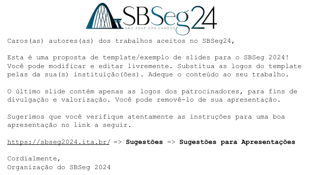

Templates
Ready starting points. Modify them, edit them and use them freely.

SBSeg 2024 template
The official slide template of the event, with a cover, content slides and a closing slide. It works for any technical talk, not only for SBSeg.
IFSClean LaTeX template
A LaTeX presentation template by Émerson Mello, in the clean variant, on a white background.